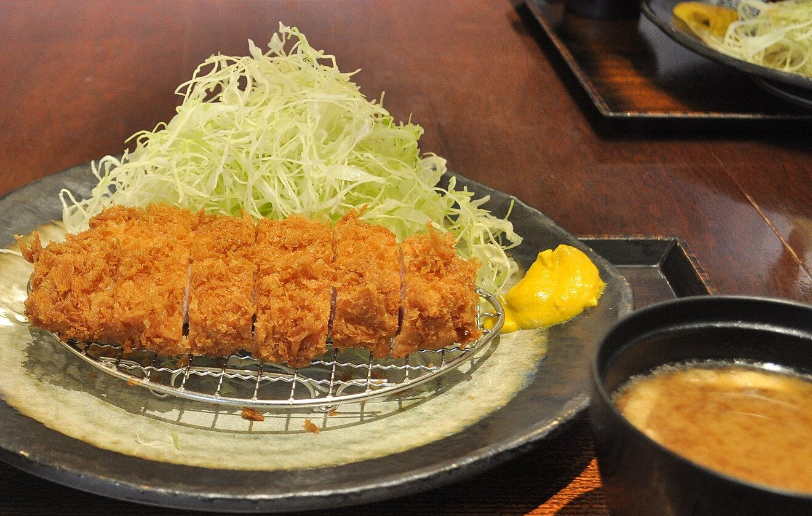
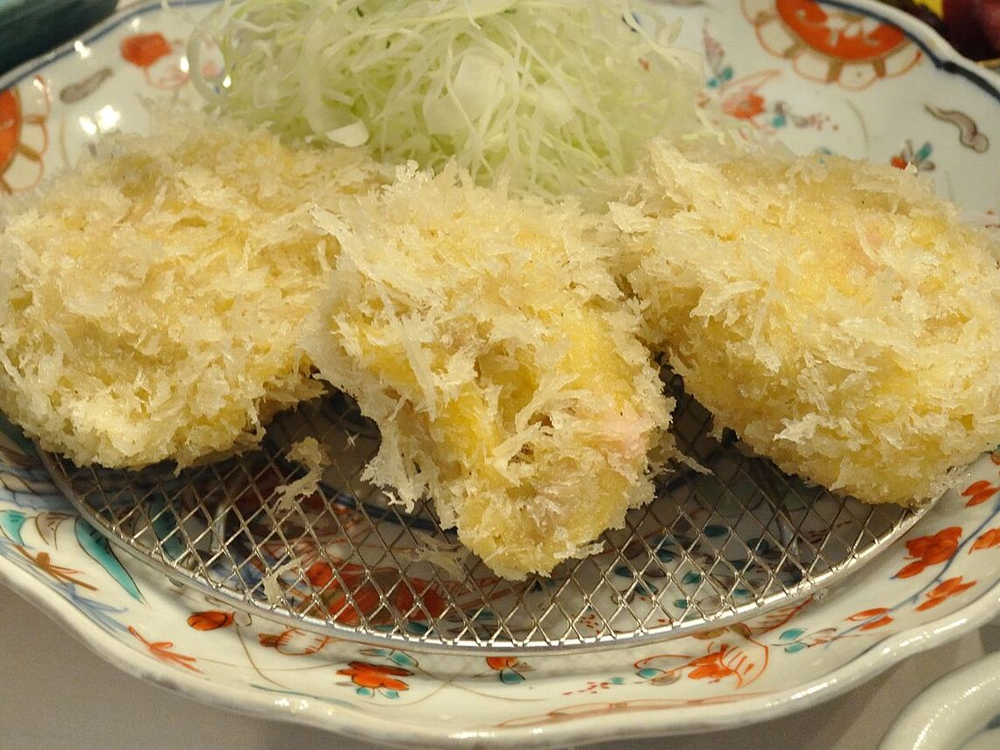
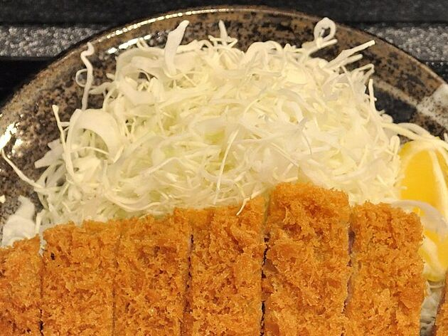
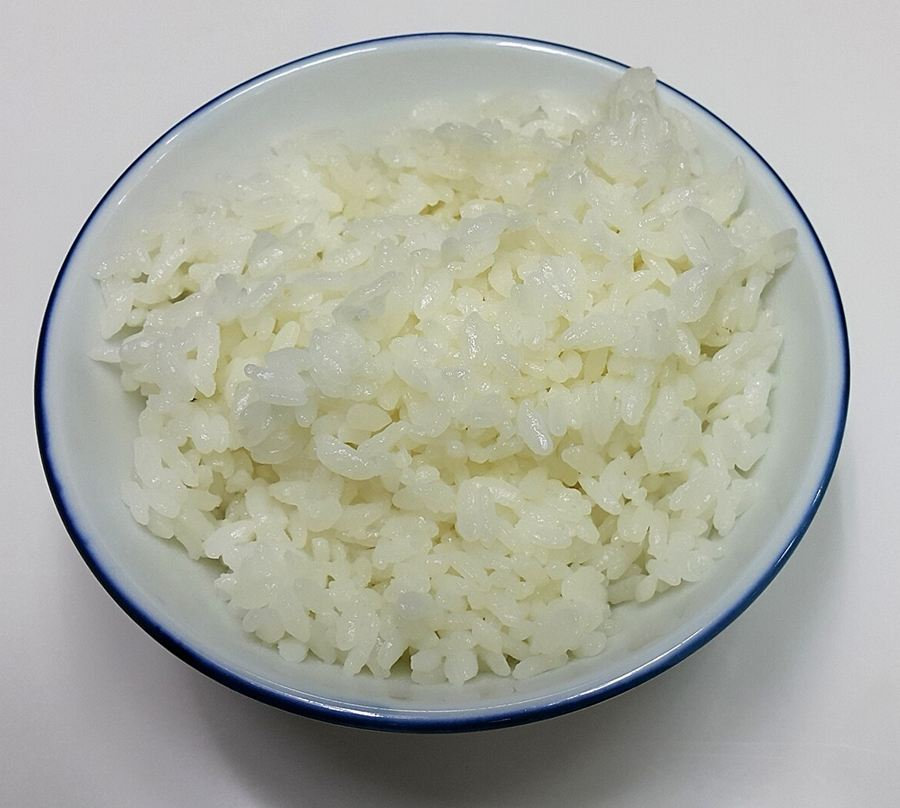
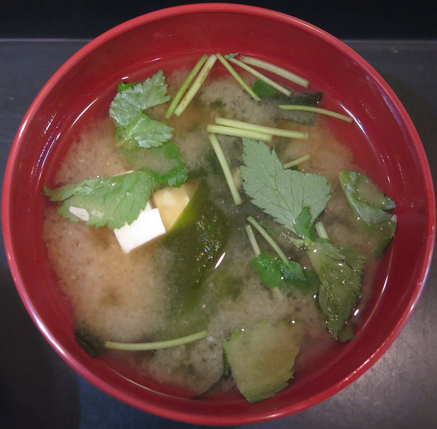
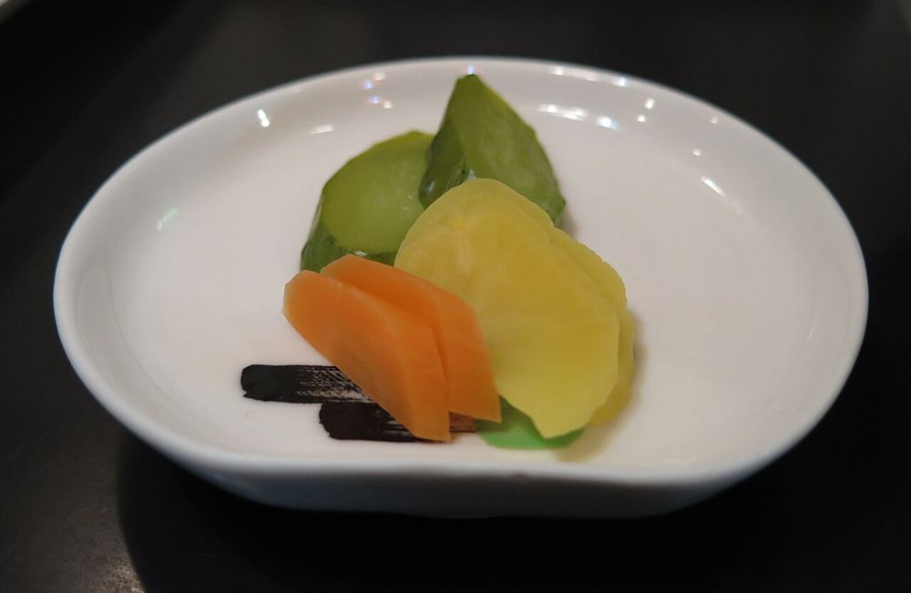

とんかつ、寿多郎。
熊本県菊池市隈府
Photo: イメージ

熊本県菊池市隈府にある、とんかつの店です。サクッとした衣、やわらかな肉、白いご飯とたっぷりのキャベツ。そんな食卓を思い描いていただけるよう、このページをつくりました。
※掲載の文章は、とんかつという料理の楽しみ方をお伝えするものです。
衣、肉、湯気。
とんかつの楽しみは、衣の音と、噛んだときの肉のやわらかさにあると言われます。
切り分けた瞬間にふわりと立つ湯気も、揚げたてならではの楽しみです。
熱いうちに、まずはひと口。そんな時間をお楽しみください。
Photo: イメージ

Photo: イメージ

一膳の取り合わせ
ご飯、お味噌汁、お漬物との取り合わせを楽しむという方も多いようです。(※イメージ写真です)
Photo: イメージ

Photo: イメージ

Photo: イメージ
